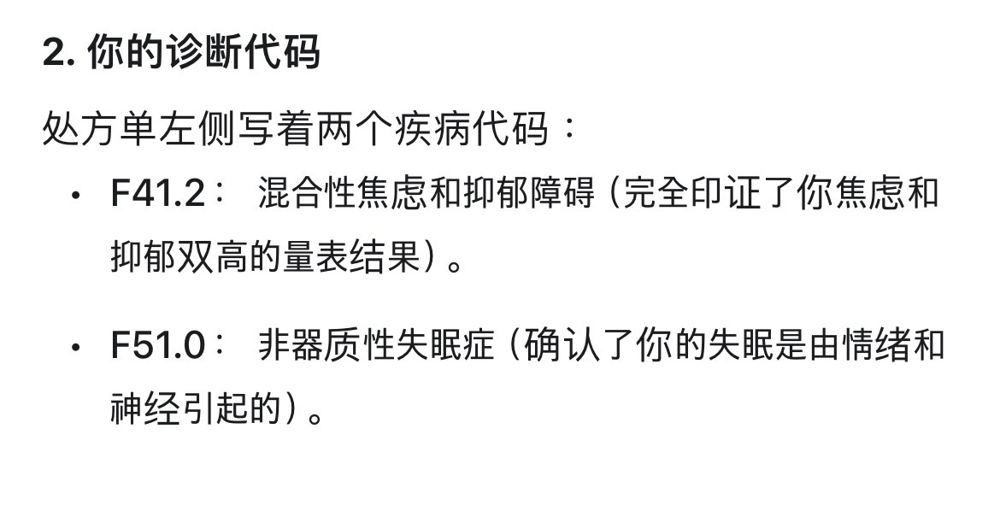
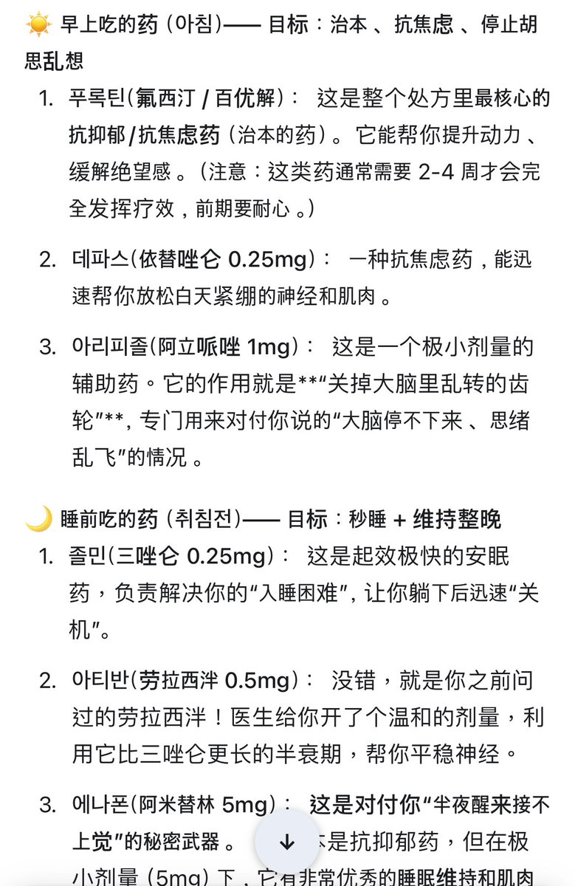

御坂 O.o 雪春📕 (掉fo版)（雪似梅花）
@0502railgun1949
怎么韩国也滥用苯二氮卓


𝓐𝓛𝓸𝓷𝓮𝓢𝓚𝔂
@A1oneSKy
韩国精神科初诊体验
我用Gemini整理翻译了我的情况给医生看
医生按照我的情况给我开了一个星期的药
然后如果下周没什么效果的话再来给我转诊单 去上级医院
交流过程也没什么特别难的 除了药名听不太懂之外
然后问诊加开药一共花了50多块钱 很便宜
就是我担心大医院要预约而且不知道我的保险会不会报销 https://t.co/vjR0caCcQW